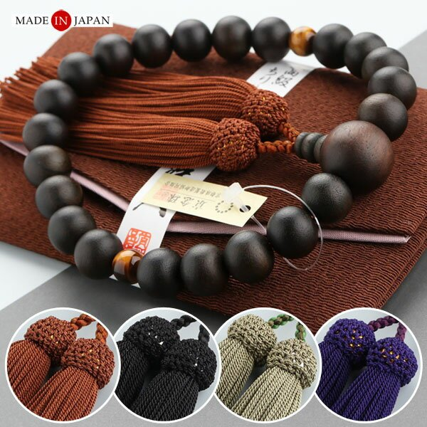
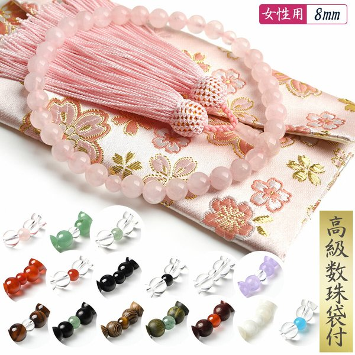
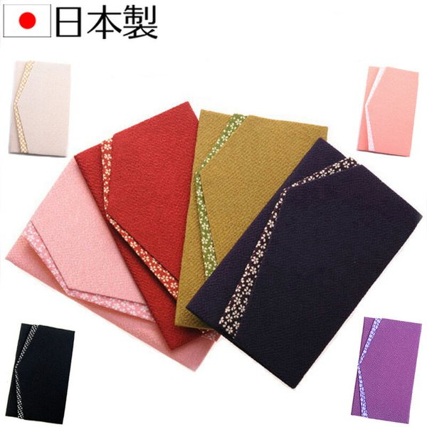
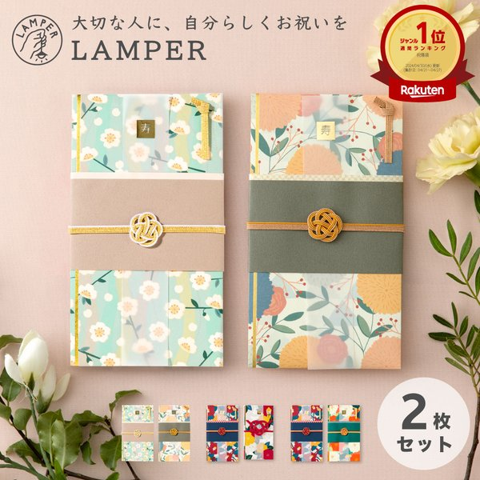
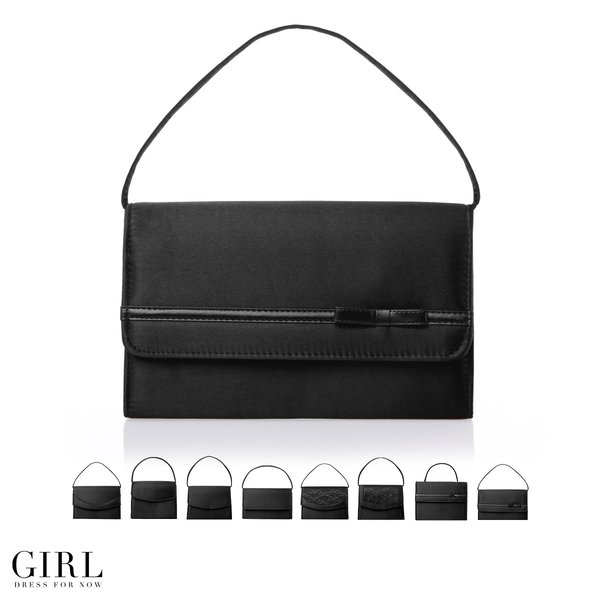
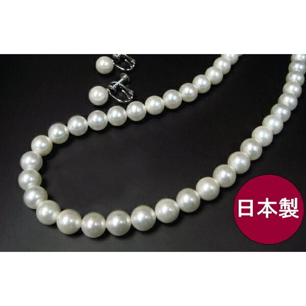
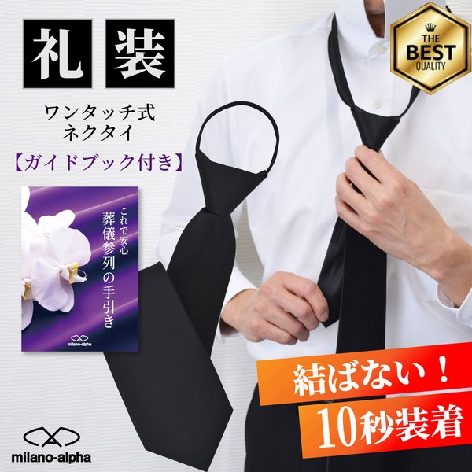
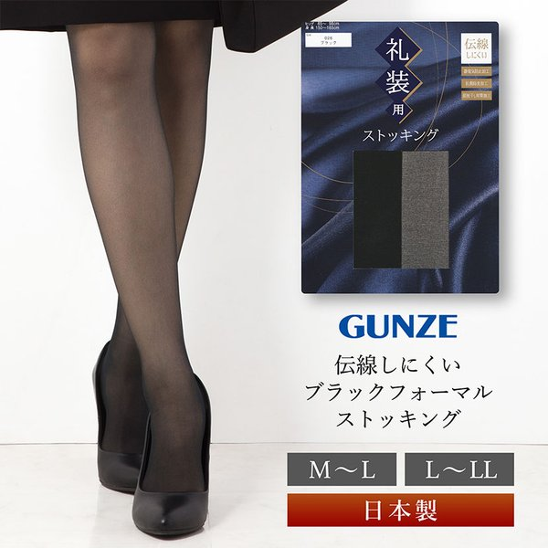
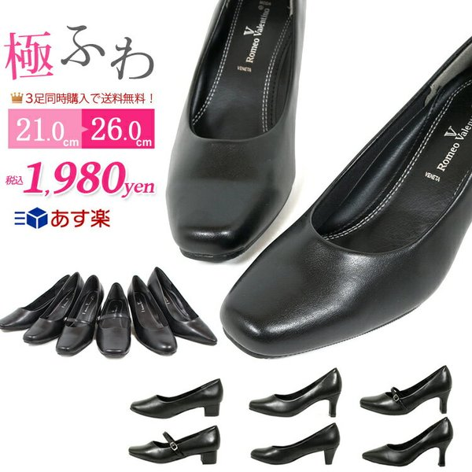

【2026年・冠婚葬祭10選】数珠・袱紗・ご祝儀袋・フォーマルバッグ・パールネックレス・黒ネクタイ・喪服を実売価格で比較
冠婚葬祭の装いは、当日に用意しようとすると間に合いません。弔事は突然に来るので、数珠と袱紗、黒のバッグとストッキングは、普段から1セット揃えておくほうが安心です。慶事も、ご祝儀袋とパールのネックレスがあるだけで、前日の準備が短くなります。
選ぶ軸は3つです。まず宗派を問わず使えるか。数珠は略式の京念珠なら、宗派を気にせず持てます。次に慶弔のどちらにも使えるか。袱紗とフォーマルバッグ、パールのネックレスは、祝い事にも弔事にも持ち出せます。最後にサイズと在庫。喪服とパンプス、ストッキングは、自分のサイズが今あるかを早めに確かめておきます。
本記事では、楽天市場で人気・高評価の冠婚葬祭・ブラックフォーマル用品10選を、実売価格とレビュー評価つきで写真付き紹介します。
- おすすめ10選 スペック・特徴比較表
- BEST 1｜京念珠 数珠 男性用 縞黒檀 22玉 2天 虎目石
- BEST 2｜数珠 女性用 本水晶 8mm（数珠入れ付き）
- BEST 3｜袱紗 慶弔両用 ちりめん 小花
- BEST 4｜LAMPER ご祝儀袋 2枚セット
- BEST 5｜GIRL フォーマルバッグ レディース 大きめ
- BEST 6｜本貝パール ネックレス・イヤリングセット 8mm
- BEST 7｜milano-alpha 黒ネクタイ ワンタッチ
- BEST 8｜グンゼ 礼装ストッキング 伝線しにくい
- BEST 9｜ロメオ バレンチノ ブラックフォーマルパンプス
- BEST 10｜マーガレット 喪服 レディース アンサンブルスーツ
- 【読者負担0円】買わなくても得する無料サービス
- まとめ：冠婚葬祭・礼装10選の選び方
| 順位 | 商品名 | ブランド | 最大の特徴・おすすめ理由 | 総合評価 |
|---|---|---|---|---|
| BEST 1 | 京念珠 数珠 男性用 縞黒檀 22玉 2天 虎目石 | 京念珠（はな花） | 日本製の京念珠 | 4.73 |
| BEST 2 | 数珠 女性用 本水晶 8mm（数珠入れ付き） | EsuonHappiness | 数珠入れ付きですぐ持って行ける | 4.60 |
| BEST 3 | 袱紗 慶弔両用 ちりめん 小花 | アウローラ | 慶弔どちらにも使える | 4.54 |
| BEST 4 | LAMPER ご祝儀袋 2枚セット | LAMPER（いろは出版） | 中袋と短冊が付いている | 4.87 |
| BEST 5 | GIRL フォーマルバッグ レディース 大きめ | GIRL | 大きめで長財布が入る | 4.31 |
| BEST 6 | 本貝パール ネックレス・イヤリングセット 8mm | ハニーキューブ | ネックレスとイヤリングのセット | 4.67 |
| BEST 7 | milano-alpha 黒ネクタイ ワンタッチ | milano-alpha | 結ぶ手間がなく10秒で着けられる | 4.81 |
| BEST 8 | グンゼ 礼装ストッキング 伝線しにくい | グンゼ（GUNZE） | 伝線しにくい編み方 | 4.60 |
| BEST 9 | ロメオ バレンチノ ブラックフォーマルパンプス | ロメオ バレンチノ | 中敷きのクッションで疲れにくい | 4.36 |
| BEST 10 | マーガレット 喪服 レディース アンサンブルスーツ | マーガレット | 7号〜25号のサイズ展開 | 4.52 |
京念珠 数珠 男性用 縞黒檀 22玉 2天 虎目石

日本製の京念珠の男性用数珠です。縞模様の入った縞黒檀の22玉に、虎目石の2天を組み合わせ、房は正絹を使っています。房の色を4色から選べるので、礼服の色に合わせて決められます。略式数珠なので、宗派を問わず持ちやすいです。楽天市場での実売価格は約3,300円（2026年11月時点）。
- 日本製の京念珠
- 22玉の男性用の定番サイズ
- 房の色を4色から選べる
- 天然木なので、玉の色味や縞の入り方は1本ずつ違う
数珠 女性用 本水晶 8mm（数珠入れ付き）

8mmの本水晶を使った女性用の数珠です。水晶の透明な玉に、選べる色の房を合わせた構成で、数珠入れが付いてきます。8mmは女性用として扱いやすい大きさで、法事やお墓参りに持って行きやすいです。楽天市場での実売価格は約1,980円（2026年11月時点）。
- 数珠入れ付きですぐ持って行ける
- 8mmで手になじみやすい
- 房の色を選べる
- 天然石なので、玉の模様には個体差がある
袱紗 慶弔両用 ちりめん 小花

ちりめんで仕立てた慶弔両用の袱紗です。小花の柄が入った落ち着いた色合いで、祝い事にも弔事にも使えます。金封を包んで持ち運ぶための一枚で、結婚式や法事のときに1枚あると、その場で包み直せます。楽天市場での実売価格は約1,000円（2026年11月時点）。
- 慶弔どちらにも使える
- ちりめんの小花柄で落ち着いた印象
- 1,000円で1枚用意できる
- メール便での配送なので、急ぎのときは到着日を確認する
LAMPER ご祝儀袋 2枚セット

中袋と短冊、書き方のガイドシートが付いたご祝儀袋の2枚セットです。1万円から5万円までの表書きに対応していて、結婚祝いや二次会の受付で渡せます。ガイドがあるので、久しぶりに包むときでも表書きの位置で迷いません。楽天市場での実売価格は約1,166円（2026年11月時点）。
- 中袋と短冊が付いている
- 1〜5万円の表書きに対応
- ガイドシートで書き方が分かる
- 2枚入りなので、何件も包むときは追加で買う
GIRL フォーマルバッグ レディース 大きめ

黒のレディース用フォーマルバッグです。大きめの作りで、長財布やスマートフォン、ハンカチをまとめて入れられます。シンプルな形なので、葬儀にも入学式や卒業式にも持って行けます。手提げの持ち手が長めで、礼服の袖に引っかかりにくいです。楽天市場での実売価格は約1,980円（2026年11月時点）。
- 大きめで長財布が入る
- 黒のシンプルな形で慶弔どちらも使える
- 手提げの持ち手が長め
- 評価4.31なので、色味と大きさは届いてから確かめたい
本貝パール ネックレス・イヤリングセット 8mm

日本製の本貝パールのネックレスとイヤリングのセットです。8mm玉のパールが並び、フォーマルの席で華やかに見えます。ネックレスと耳元を同じ質感で揃えられるので、結婚式や式典の装いに迷ったときの定番になります。楽天市場での実売価格は約6,980円（2026年11月時点）。
- ネックレスとイヤリングのセット
- 8mm玉で存在感がある
- 日本製でフォーマル向き
- イヤリングかピアスかを選んで注文する
milano-alpha 黒ネクタイ ワンタッチ

結ばずに着けられる黒のワンタッチネクタイです。ファスナー式で首に通して締めるだけで、10秒ほどで装着できます。不意の弔事に備えて1本持っておくと、礼服を出したその場でネクタイまで整います。楽天市場での実売価格は約1,280円（2026年11月時点）。
- 結ぶ手間がなく10秒で着けられる
- 黒のフォーマル仕様
- ファスナーで長さを調整できる
- 結び目が固定されているので、結び方の形は選べない
グンゼ 礼装ストッキング 伝線しにくい

グンゼの礼装用ストッキングです。伝線しにくい編み方で、静電気防止と抗菌防臭の加工が入っています。黒のフォーマル用で、日本製。葬儀や法事の日に、着替えの予備として1足持っておくと安心です。楽天市場での実売価格は約690円（2026年11月時点）。
- 伝線しにくい編み方
- 静電気防止と抗菌防臭加工
- 日本製
- サイズがM〜LとLL〜3Lに分かれるので、購入前に確認する
ロメオ バレンチノ ブラックフォーマルパンプス

黒のブラックフォーマルパンプスです。中敷きにクッションが入っていて、式場で長時間立っていても足が疲れにくい作りです。21.0cmから26cmまでサイズが展開され、リクルートやオフィスにも使えます。3足で送料無料になるので、予備を揃えるのも手です。楽天市場での実売価格は約1,980円（2026年11月時点）。
- 中敷きのクッションで疲れにくい
- 21.0〜26cmのサイズ展開
- 3足で送料無料になる
- 評価4.36なので、サイズ感は自分の足で確かめたい
マーガレット 喪服 レディース アンサンブルスーツ
オールシーズン着られるレディースの喪服アンサンブルスーツです。上着とワンピースの組み合わせで、1着で弔事の装いが整います。7号から25号までサイズが展開され、洗濯できる素材なので、急な弔事のあとにも手入れしやすいです。楽天市場での実売価格は約8,800円（2026年11月時点）。
- 7号〜25号のサイズ展開
- 上着とワンピースで1着そろう
- 洗える素材で手入れしやすい
- 大きいサイズは在庫が薄いので、早めに確認する
この記事の商品を買う前に、まずは無料で得する選択肢をチェック。どれも登録・利用は0円で、無料期間中に解約すれば料金はかかりません。読みたい雑誌がある人、ポイントを貯めたい人、アンケートなら気軽という人、それぞれに合うものを選べます。
初回31日無料・無料期間中に解約すれば0円 → 楽天ポイントモール｜登録無料で毎日ポイ活
買い物なしでもポイントが貯まる無料サービス → 楽天インサイト｜アンケートに答えてポイント
登録無料・すきま時間のアンケートで貯まる → 楽天カード｜年会費永年無料
新規発行・年会費ずっと0円 →
4つのサービスの違いと使い分けは「出費0円で得する！買わずにポイントが貯まる無料サービス厳選4選」でまとめています。
💡 まとめ：冠婚葬祭・礼装10選の選び方
冠婚葬祭の道具は、慶弔の両方に使えるものを軸に揃えると、持ち物が増えません。数珠は男性用の京念珠と女性用の本水晶を1本ずつ、袱紗はアウローラの慶弔両用、フォーマルバッグはGIRLの大きめ、パールはハニーキューブのネックレスセット、黒ネクタイはmilano-alphaのワンタッチ、ストッキングはグンゼの礼装用。慶事のご祝儀袋はLAMPER、足元はロメオ バレンチノのパンプス、弔事の礼服はマーガレットのアンサンブルを1着持っておくと、急な連絡にも落ち着いて対応できます。まず数珠と袱紗から揃えて、礼服と靴はサイズを確かめてから買い替えるのが、無駄の少ない準備です。
楽天市場では「5と0のつく日」や「お買い物マラソン」などのキャンペーンに合わせて購入すると、ポイント還元が最大化してお得に手に入ります。ぜひチェックしてみてくださいね。